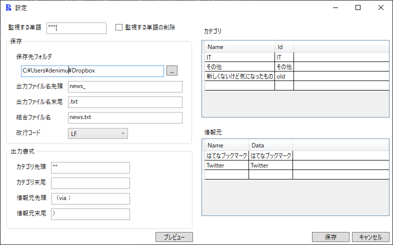

設定例
その１ - アンカータグ(aタグ)を使用する場合
その２ - アンカータグ(aタグ)を使用するがニュース以外でもアンカータグをコピーすることがある場合
監視する単語にアンカータグを含めず、専用の単語を用意する（アンカータグ生成ツールでその単語を含むように設定する）。
Create Linkの設定例
ツールの設定例
その３ - はてな記法を使用する場合
はてな記法でカテゴリが中見出し、ニュースのURLが小見出しの場合
